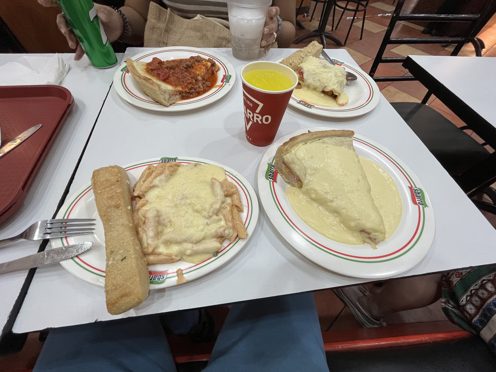
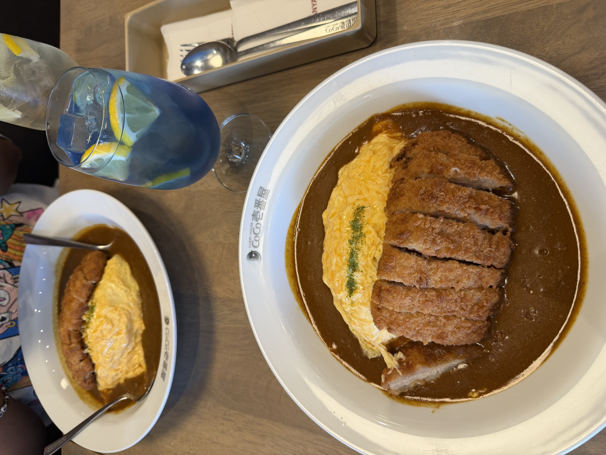

I was wondering what to give you for your birthday other than the bangboo pillow, and with my limitations with my budgets (sowwy), I decided to make this "portfolio" of our memories together! I hope this is enough to show you how much you are to me. Enjoy!
Wow, time flies so fast.. You're halfway through 20 now! (i make it sound like a good thing meheh)
It's been a while since I wrote something like this, let along not talking, like, how we always do meheh
I said what I said in the first sentence because going through my gallery while looking for videos and
pictures to put in this letter, I can't help but feel like time has flown by so fast.

I haven't really taken much pictures of every birthday, but I do cherish the ones that I did, despite if we were just eating at some cheap place or something. (looking back at this picture, i'm surprised i was able to eat all of this before..) Looking back at these pictures, I realized that we don't have to eat in some fancy restaurant every time, I still enjoy every second of it.
Even when we are just lazing around, I still enjoy every second I spend with you.
All we do is just eat, huh. I apologize I haven't really said much deep things or anything, I just wanted to show you that I enjoy every second I spend with you, and I hope you know that. (also i wanted to flex that i pro website maker meheheh)
Here's to more birthdays, adventures, memories, and most importantly, more food meheheh
Happy Birthday my bb! I love you so much.
Now i dump some stuff below meheh

yumy stek las year.. i towie no stek dis year.. we eat soon meheh

mor coco

let also et mor pasta dis year meheh
tenk u to bubut for sponsor .. even doe it filipino fud it still yumy
waoww u do hair (i making this while u do ur hair meheh)
Anyway, that's all I have for you for now. Again, Happy Birthday bb! I love you.
-Jake